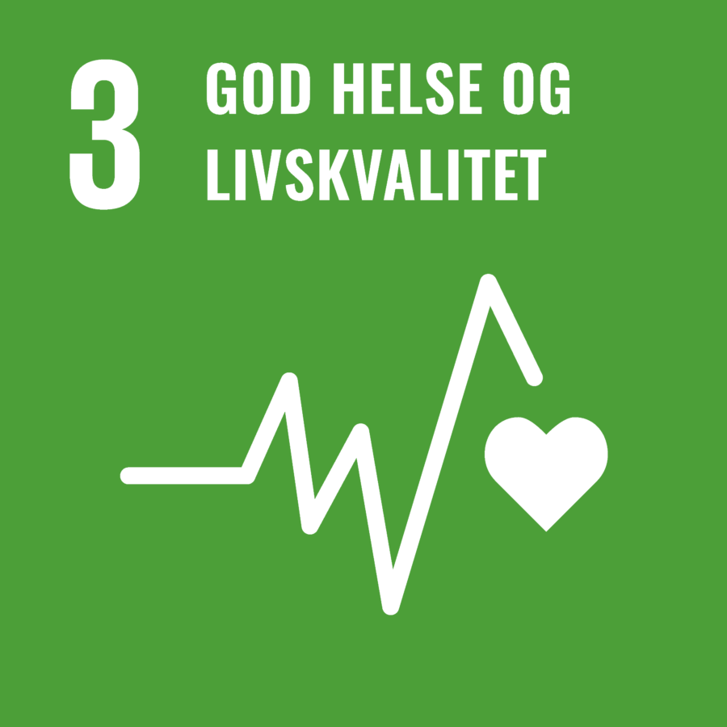

Om oss
Et inkluderende treningsmiljø
My Strongest Side® jobber for at flere skal kunne trene på vanlige treningssentre – med trygghet,
tydelige tilpasninger og støtte som fungerer i praksis.
Personer med funksjonsvariasjoner møter ofte unødvendige barrierer i treningsmiljøer. Derfor utvikler vi både et inkluderende
treningstilbud i små grupper og en digital løsning som gjør apparattrening mer forståelig og tilgjengelig.
Vi piloterer nå en QR-basert løsning der brukeren kan skanne en kode på utvalgte apparater og få enkel
veiledning tilpasset ulike behov. Målet er å senke terskelen for å trene selvstendig – uten at treningssenteret må gjøre
store fysiske ombygginger.
Arbeidet er faglig forankret og utvikles i samarbeid med relevante miljøer. Prosjektet støtter særlig FNs bærekraftsmål
3 (God helse og livskvalitet) og 10 (Mindre ulikhet).
Treningen foregår i små grupper på vanlige treningssentre, med veiledning fra fagpersoner og frivillige som ser deg og
tilpasser øvelsene etter behov.
Navnet
Vi tror alle har en sterk side. Ofte handler det om å finne den – med riktige grep, god oppfølging og et miljø der du kan være deg selv.
My Strongest Side® handler derfor om mer enn fysisk styrke: det handler også om trygghet og mestring over tid.
Bak initiativet
My Strongest Side® ble startet av Alexander Mjøs Sviggum, ergoterapeut og styrkeløfter
med cerebral parese. Gjennom både helsearbeid og egen trening erfarte han hvor mye tilpasning og forutsigbarhet betyr –
og hvor vanskelig det kan være å finne et tilbud som ser hele mennesket, ikke bare diagnosen.
I dag drives prosjektet videre av et team av fagpersoner, studenter og frivillige. Teamet består blant annet av ergo- og
fysioterapistudenter fra Høgskulen på Vestlandet, personlige trenere og frivillige med ulik erfaring – med ett felles mål:
å gjøre trening mer inkluderende og universelt utformet.
Gjennom samarbeidet mellom helsefag, treningssentre og organisasjoner skaper vi møteplasser der deltakere kan oppleve
mestring, trygghet og fellesskap. Sammen gjør vi styrketrening mulig for flere.
FNs bærekraftsmål
My Strongest Side støtter særlig:

Mål 3: God helse og livskvalitet
Sikre god helse og fremme livskvalitet for alle, uansett alder.

Mål 10: Mindre ulikhet
Redusere ulikhet i og mellom land, og sikre sosial og politisk inkludering for alle.
Målet vårt er enkelt:
At flest mulig skal kunne trene – på sin måte, i sitt tempo
og med den støtten de trenger.